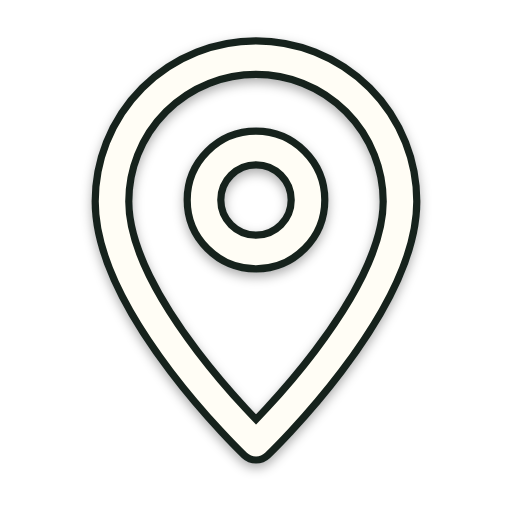
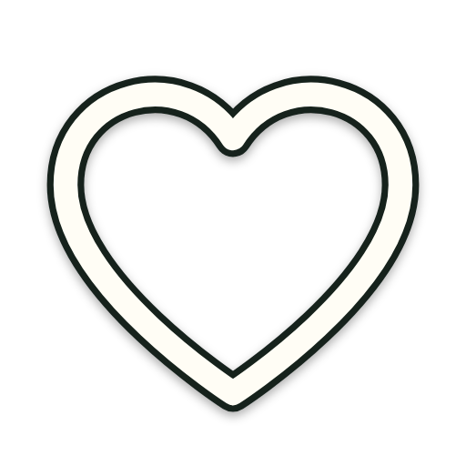
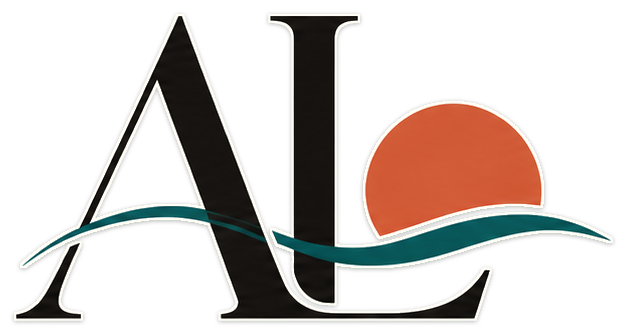

Contorno de contraste fino y sombra local. Sin soporte rectangular. Las tres filas usan exactamente el mismo archivo universal; los fondos sólo son una prueba técnica. La prueba con tomas propias se conserva con el episodio.
| Prueba | Like · contorno | Like · énfasis | Pin de ubicación | Corazón |
|---|---|---|---|---|
| Claro |  |  | ||
| Oscuro | ||||
| Detalle |

El dibujo y los colores originales permanecen delante; el apoyo de alfa va por detrás. También se conservan las copias originales sin apoyo. No se ha verificado la importación en Clipo.
Ver la animación por piezas · Design system